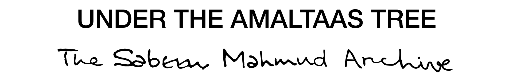
Sabeen Mahmud (1974 - 2015)
Sabeen Mahmud was a Pakistani human rights activist, entrepreneur and self taught designer.She stood for community, culture and open dialogue and with these principles founded The Second Floor (T2F), a coffee house and community space.T2F hosted a range of public events like; film screenings, poetry readings, stand-up comedy, and panels on human rights, science lectures, and other topics. Sabeen brought poets, politicians, artists, and activists together to share ideas over a cup of tea. In 2015 after hosting a panel titled “Unsilencing Balochistan” Sabeen was shot at a signal as she was leaving the event.
Context
The act of collecting this data began in 2015 by members of the Sabeen Mahmud Forum. This involved photographing Sabeen’s spaces and belongings, scanning family albums, recovering blogs, tweets, social media posts by Sabeen, and interviewing Sabeen’s friends and family. After reaching a critical junction this project was let go as there was no consensus on what form this archive should take.
Abstract
The Sabeen Mahmud Archive is a digital platform that allows viewers to get to know Sabeen and her work posthumously and allows contributors to add to this archive. Through the use of documents (objects of significance) and accounts from people in her life. In Sabeen’s own words technology is the biggest driver of change so it is fitting to use new media to facilitate this storytelling. This archive moves beyond being a repository of knowledge and immerses viewers in an experience where they can follow a trail of Sabeen's interests.
Stakeholder Map
Identifying the stakeholders and their needs was crucial to designing a solution that would be meaningful and impactful. The stakeholder map below shows the different groups of people who have an interest in Sabeen's legacy and the archive, along with their specific needs and motivations. For the first iteration of the archive, the focus was on stakeholder groups 1, 2 and 3.
Click on the numbers to learn more about each stakeholder group.
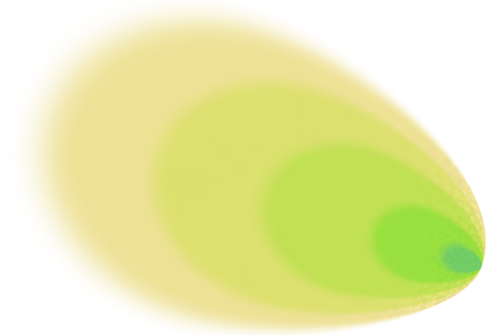
5. New/Wider Audiences
Need an introduction to Sabeen and her work and context for the stories and a way to access the archive
4.Pakistani Audiences
Have some knowledge of Sabeen and her work but interested in specific details and aspects.
3. Collaborators & Contributors
Need a place to store and showcase the work done and stories collected that gives them credit.
2. Friends, Family and Colleagues
Need catharsis, healing and an authentic representation of Sabeen and her legacy.
1. Sabeen
Deserves authentic representation, and a place to be honored and remembered in a way that also inspires more young people.
Roles & Responsibilities
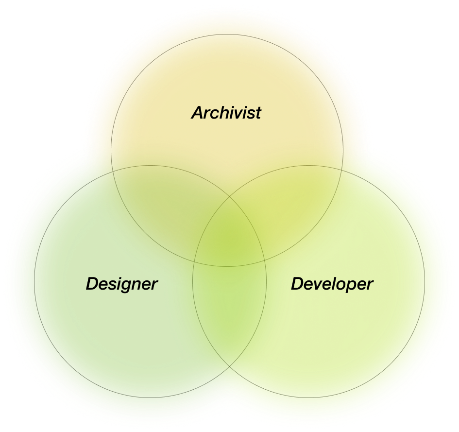
1. Cataloging the existing data.
2. Curating and formatting a selection of the data.
3. Developing a design system to ensure consistency.
4. Designing assets for VR Environments.
5. UX design for Web VR platforms.
6. Coding and developing the solution.
7. Designing a launch/exhibition for the project.
8. Designing a way for people to add to the archive.
Content Catalogue
Total Data: 43.75 GB
Unique Data: 36.88 GB
Cataloged Data: 36.88 GB
Inherited Themes
Mediums
Classification:
Artefacts
Memorials
Space
Journals
Autobiographic Data
Biographic Data
Instructional Doc
Interview
Archival Methodology
| Literature | Learnings |
|---|---|
| "The space of a document, be it visual or audiovisual, becomes the only space in which the performance takes place."
- Nataša Petrešin-Bachelez, Living archive: The performative potential of a document |
A “document” has a performative aspect. This performance establishes a relationship with the viewer. Spatial context matters as document outside it’s context changes meaning, |
| "Performances function as vital acts of transfer, transmitting social knowledge, memory, and a sense of identity through reiterated, or ...‘twice-behaved behavior."
- Diana Taylor, The Archive and the Repertoire: Performing Cultural Memory in the Americas |
Performance is an “act of transfer”, it holds vital cultural/social knowledge and memory |
Case Studies
The Anne Frank House Online
A virtual tour of the Anne Frank House that features narration and guidance.
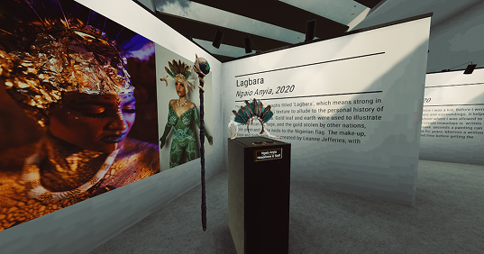
LGBTQ+ VR MUSEUM
A virtual museum that uses VR to share stories and artefacts curated directly from the queer community.
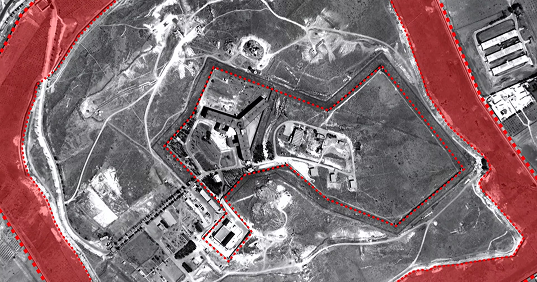
Saydnaya - Inside a Syrian torture Prison
A virtual reconstruction of a Syrian torture prison that uses testimony of survivors visualize and document atrocities in the prison

Early Concept
The initial concept arose out of a visit to Sabeen’s bedroom. Having been preserved just as she left it, this space evoked her and each object told a story. This is how I began to explore the idea of space as interface and artefacts as performers in this space. By linking artefacts with memories I started making associations that helped me select Images and audio files from the dataset.
View Ideation on MiroProof of Concept
Using the content that was shared a short trailer was created to explain the concept. This was shared Sabeen’s mother, Mahenaz Mahmud.
Designing The Environments
Recreating rooms from photographs and 3D scans led to gaps in spatial data. For this reason I began drawing the environments for the initial prototype. This also solved the problem of scanning spaces that no longer existed or had changed since Sabeen’s death.
I decided to limit my scope and draw 4 rooms for the first iteration. The selection of these spaces were based on the data that I had as well as my own understanding of Sabeen. The rooms were drawn on top of an Equirectangular grid and then rendered using a watercolour paint style on procreate. The advantage of a digital drawing is also the low effort stake of adding and subtracting from it.

3D scan of Sabeen’s room made using Polycam.
Equirectangular reconstruction of Sabeen’s bedroom using images on Touchdesigner.
Equirectangular Sketches
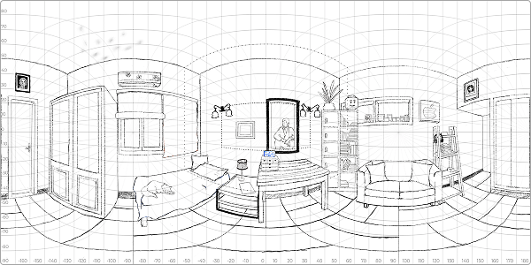
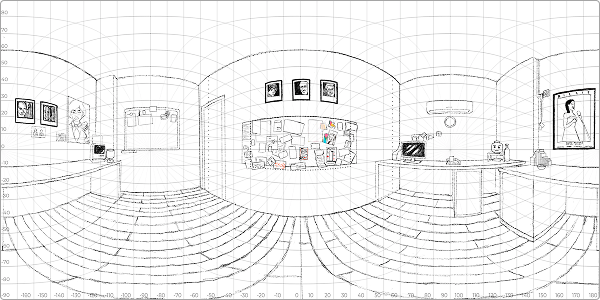
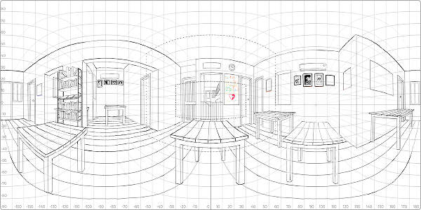
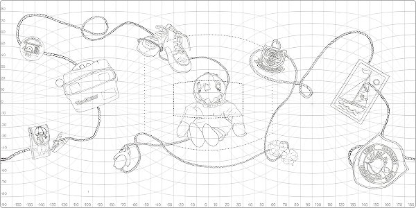
Rendered Environments
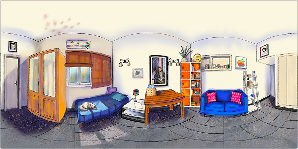
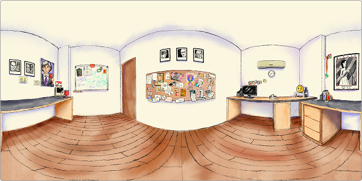
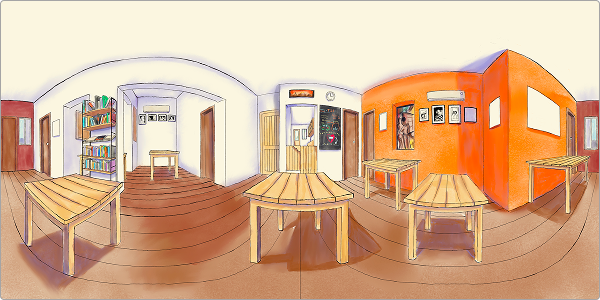
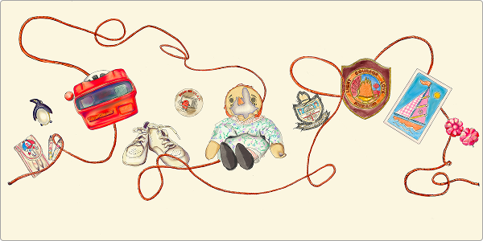
Designing The Identity
Using Sabeen’s signature and selected character from the last sticky note she wrote, we created a typeface that we could use to create the logo of the archive.
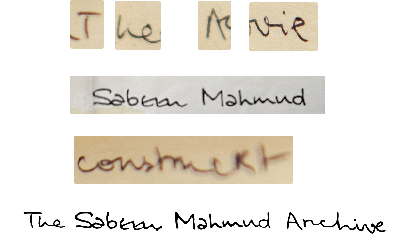
UI & UX Design
Developing the website required an initial wireframe of the interface, experience and userflows. To keep things simple the experience only allows viewers the option to view images, play audios and switch between rooms. These flows were roughly mapped out on Figma and are viewable below.
Exhibition Design
The project culminated in a one day pop-up where visitors were able to try the experience in VR and also learn a bit about the process of making this experience. The exhibition divided the space into three zones; introduction where viewers are oriented with brochures, a curatorial note, and a short introductory video, trial where they can experience the VR or try out on desktop, and feedback where they can leave a comment.


Technical Development
Landing Page

Using a HTML5 we created a landing page with sections where the viewer can learn and read about the archive.
Why: Provides context and assets to loadtime.
Database Management

Using a JavaScript database, where every item is cataloged with its own metadata, allows viewers to see the source of every image, audio, and text.
Why: Scalability to add a new memory.
3D Space Development

Using a web-based VR framework allowed us to build 3D environments that run directly in a browser.
Why:Accessible Cross-Platform Responsive Design.
Interaction Design

Using a DOM (Document Object Model) event system we allowed viewers to interact with the environment by clicking to trigger data.
Why:Accessible Cross-Platform Responsive Design.
Project Management

Documentation, cataloging, & notation.

Time Tracking (integrated with Notion)

Transcribing & recording online meetings.

Managing the repository & version history.
Insights & Challenges
Insight into the design process, research, and methodology used throughout the project.